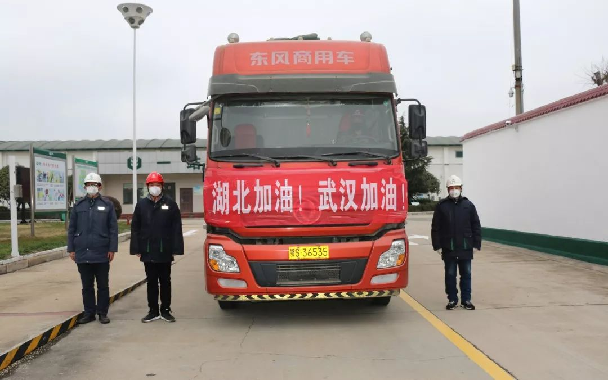
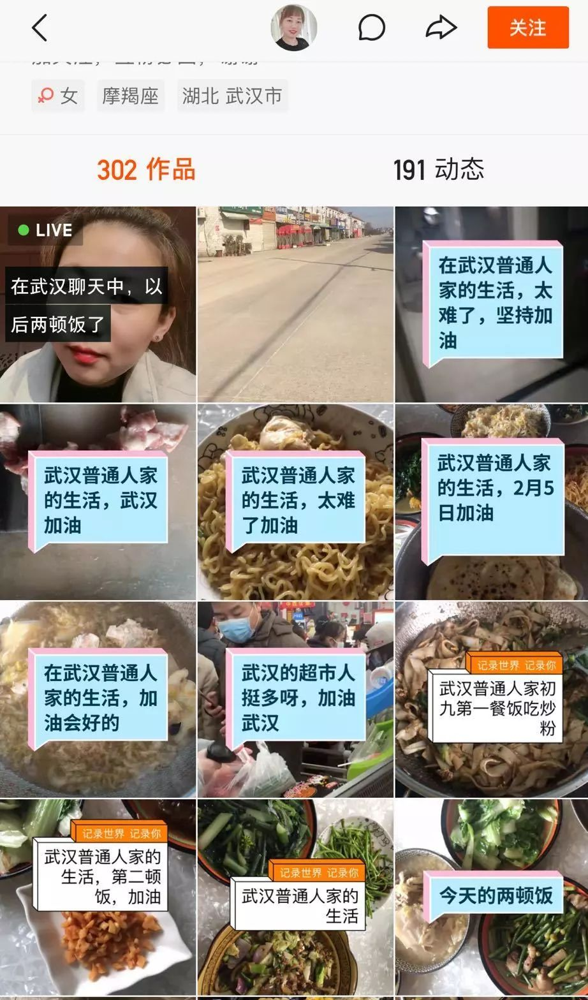

火神山医院今天开始接收患者，院长是SARS防治专家
原文链接 备份链接 拥有1000张床位的火神山医院今天开始接收病人，主要救治确诊患者。 1400位来自军队的医护人员已经抵达，院长张思兵大校是SARS防治专家。 拥有1600张床位的雷神山医院预计2月5日完工。 两家医院投入使用一 …
_
2020农历新年，没有过年的喜庆。无数的心被疫情牵动，武汉、孝感、黄冈、随州、荆州……多座城市陆续启动突发公共卫生事件一级应急响应，湖北、广东、浙江等共有34个省份出现新型冠状病毒感染病患。
截止2月8日，共有34662人确诊，疑似病例达27657例，重症达6101人，死亡724人，治愈2313人。这是场与死神的生死较量。
当疫区城市被封锁，口罩、防护服、蔬菜、水果……甚至成人纸尿裤都在告急时，无数人开始行动，支援前线医护人员，支援此刻受难的同胞。

他们来自不同城市，职业各异。他们是外地务工人员，是农民，是卡车司机，是快递员，是外卖员……无论是否在疫区，他们逆行而上，成为城市的守护者，为城市的运转贡献一份力量。
西红柿、黄瓜、大蒜、西葫芦、红肠，被一筐筐送上卡车，它们有了共同的目的地：武汉。人们的关心是朴实的，风暴中的人们能不能吃上饭。在他们看来，“这是作为普通人，尽我自己最大的努力了”，但这也是他们辛苦一年的收成。

在快手里，一句匆匆喊出的“武汉加油、中国加油”，一辆辆载着物资驶向湖北的卡车，还有送货小哥的身影，总能给人慰藉和温暖。疫情并未隔离人心，唯有行动给予能量。
快手记录了这些普通人的守望时刻，有赶赴前线医护人员的勇气，有卡车司机逆行的执拗，有快递员在空旷街头的孤独，也有隔离在家的乐观。
我们坚信，记录有力量，而我们终将挺过这场没有硝烟的战役。所以，我们一起加油。
速
“面对生命，全速前进”
1月28日，走南闯北的阿三拉了一批货物前往武汉。这是一批送往武汉火神山医院的搭建物资。当天是火神山医院建设的第三天，而在6天后，这家医院将交付使用。
在镜头前，他说，“第一次与货主在时间上没有任何计较，保证全速前进。以前计较价格、时间，但是今天不行，面对的是生命，越早送到，越有好处。”
从河北廊坊到武汉火神山，阿三哥用了17小时，早于原定时间。中途，他在加油站休息了半小时。他清楚时间是至关重要，只有“全速前进”。
从武汉回来后，他又火速联系家乡防疫站，主动要求隔离。尽管从隔离医院的窗户就能望见自家院子，他还选择隔离，“对家人负责”。
阿三哥在快手里记录了离家前的情景。小儿子抱着爸爸的大腿不放，满是依恋。卡车司机常年东奔西跑，不着家，难得过年回趟家，偏偏遇到灾情。阿三哥很朴实，他说，“就是想给孩子树立个榜样，当年我父亲也是这样教育我的。”
在快手里，驰援灾区的卡车司机还有很多，目的地是武汉。冷藏司机秋姐和丈夫免费为武汉协和医院运送蔬菜，快到武汉时，大雾弥漫，两人搭伙前行，有个照应。一趟结束后，两人又赶回云南，开始第二趟支援之旅。
战
“从医院到互联网一直战斗在一线”
“我们现在已经到达武汉了，看我的口罩没有，里里外外三层哦，两个外科口罩一个N95”，1月27日，迷彩小护士（圆圆糖）团队发布了医护人员落地武汉的视频。
在她们身后，还有更多一样穿着迷彩服戴着口罩前来支援武汉的医护人员，走向疫区中心。

自疫情发布以来，全国各地多家医院派出医疗团队支援武汉。2月7日，国家卫健委表示，医护人员支援的力量已经达到11000多人。告别儿女，告别父母，他们只身出现在需要他们的地方。即使被口罩勒出印痕，还坚持在一线，为了治病救人。

在快手，武汉大学人民医院的呼吸科医生余昌平做着关于新型冠状病毒的科普工作。
他是第一个被感染的湖北新型冠状病毒防治专家组的成员，此时正在重症病房隔离治疗中。他说话风趣，一口地方腔调。前线专家在快手做科普这无疑能消除大众对病毒的恐慌。
他想在快手搞点科普，告诉大家疾病和疫情的认识判断。因为，“从医院到互联网一直战斗在一线。”
被新型冠状病毒击中后，余医生经历过昏迷，几乎已处在弥留之际。但是他靠着对自身体质和意志力的信心，精神一天天好转。
对于冲在一线的医护人员而言，余医生不知道什么时候感染，被谁感染的。但是他说，等到出院，我还要继续救治病人。
的确，抗病毒是一场拉锯战，积极防护和科学认知必不可少。感谢奋战在一线的医护人员，感谢你们的坚守。
速
“中国速度”的背后
马立业是一家山东电动车公司的销售员。这个春节，他成了武汉火神山医院的志愿者，援助医院建设。
1月23日，也就是大年夜的前一天，他在快手录段子，表示春节继续接单。5天后，他拍下武汉空荡的街道和高楼，说“武汉加油，我来了。”
援建的日子是加班加点，不分昼夜。马立业常在凌晨发短视频。镜头里的火神山医院施工现场，仍是忙碌的样子，吊车发出轰鸣声，工人在搬运建材，户外搭建通风管道。经过一天的劳作，他坐在马路牙子上大口吃着盒饭，“香”！

加班加点是为了按时交付。2月2日上午，这座建筑面积3万多平米、拥有1000个床位的火神山医院正式移交人民军队医务工作者，隔日火神山医院正式收治新型冠状病毒肺炎患者。
在视频里，小马哥说“记录是为了留下一份见证”。他见证了10天造一座医院的“中国速度”。在小马哥和务工人员的快手里，这些不具名者劳动身影被记录了下来，他们的疲惫与汗水值得被记录与赞美。
这是劳动人民有力量的见证。
决
“尽一个普通人最大的努力”
折腾了9天，一万斤萝卜终于捐了出去。1月29日，天津西青区的大丹丹发现疫情，想把自家农地的一万斤萝卜捐献给灾区，献一份爱心。
姐弟俩在快手发出求助，希望能有免费出车的爱心人士将萝卜运往武汉。联系到车辆后，一家人开始装萝卜。那时，他们还未得知私人运输已经无法抵达疫区，交通管道让位于医疗物资和机构运输。

知道消息后，这家人又心急如焚地联系其他车辆。其中辗转难测，他们遭遇了质疑与误解，也遭遇了作秀的假慈善。初衷只想捐献萝卜的这家人没有预料，“做好事这么难”。
被误解和质疑的两天半是难熬的。大丹丹在快手里回忆，“半夜12点多，虽然累但是还是睡不着，心里忐忑，怕找不到车，怕被人误解，也怕这两天半的努力泡汤了。”
这批萝卜捐赠给了天津市和平区红十字会。支撑他们的是视频下的爱心留言，鼓励、支持着他们。
在云南省红河州河口县坡头村，93户村民自发捐赠出22吨香蕉给武汉。山路难行车，村民们就骑着摩托车将一筐一筐的香蕉运到集中点，再统一发车至武汉。

日照绿茶一哥捐赠3000斤西红柿驰援武汉，一筐筐西红柿连夜专车发往武汉。“有力出力”，在一哥眼中，这是他作为一个普通人所尽最大的努力了。

武汉同城日记
这是武汉封城的第17天。武汉市公交、地铁系统已经停运，加上私家车禁行，昔日热闹、繁华的都市迅速沉寂，拥挤的街头也空荡，无车辆通行。

透过快手的同城，所幸这座城市还未因为疫情停摆。居家隔离之外，人们努力维持日常生活，用乐观和信心建立起生活的秩序，不被恐慌击垮。
武汉火车站工作人员“你行你叫左爽”忙碌了一年，刚准备回家过年，因为疫情来袭，考虑家人安全，准备不回家了。2019年，他刚毕业，加入工作第一年。他用快手拍下即将封城的武汉站和工作中的自己，给武汉加油，也给自己加油。他说，“目前健康，请亲人家人朋友们放心！”
在武汉，仍有快递员、外卖员坚持在工作。快递员袁双载着一箱货物，驶入空荡荡的街道。他调侃，“除了我还在送货外，小区没有一个人”。为了避免感染，现在送货提倡无接触式送货。一户人家递出一个口罩，一个句“感谢”能让他开心好久。

原本喧嚣的街头变得冷寂，令外卖小哥感到陌生。他们也会感到孤独。一位外卖员哭诉，“现在没有人，完全大街小巷都没有人，我心里很难受，我一边在骑车，一边在哭。”
还有菜农在摆摊，老人戴着口罩，守着批发的大葱、青菜，放久了也就烂了。
街头里流行起芬兰排队法，人们在超市门口相隔一米距离，等着进超市采购。一些市民还自带护目镜。人们开始相互救助，一起团购大批物资，再发放给无法出门采购的市民。

疫区市民在快手留下一段段封城日记，简短却朴素。带着口罩去超市买菜，进家门前全身消毒，也有偶尔苦中作乐。哪怕只是一日三餐，家人的笑脸，也是人们向相互守望的人们报一声“平安”，日子还有在好好过。

武汉封城的第四天，也是“简简单单的金姐”做月子的第38天。她的第二个宝宝出生了。她与老公带着孩子隔离在家。1月30日，阴霾了几天的武汉出太阳了，金姐也想出门走走。
在同城日记里，她写下，“今天天气很好，阳光暖暖的，如果是平时，江滩一定有好多人晒太阳，放风筝、谈恋爱。“

疫情之下，往日的散步成了奢望。快手同城是一个赛博之城，记录下空荡街头之外疫区市民日常点滴，有紧张，也有放松。记录不会停止，这是我们彼此的发声，彼此的守望，给疫区市民带去温暖和慰藉。
再道一声，武汉加油，中国加油。
_
_
（文：吴禾 图：快手）
设计排版：赵星宇

_
原文链接 备份链接 拥有1000张床位的火神山医院今天开始接收病人，主要救治确诊患者。 1400位来自军队的医护人员已经抵达，院长张思兵大校是SARS防治专家。 拥有1600张床位的雷神山医院预计2月5日完工。 两家医院投入使用一 …
原文链接 备份链接 《战疫口述记》，是燃财经在新型冠状病毒肺炎期间推出的特别栏目，记录疫情亲历者的观察和感受。本文为第6篇，查看前5篇请点击《我和公司都快熬不住了》《节后返京，太太太南了》《我的“流浪”春节》《农村这样防肺炎》《我在武汉 …
原文链接 备份链接 今天，火神山医院正式交付。9天时间，可容纳1000张床位的医院在武汉落成，参照非典期间北京小汤山医院模式，专门收治新型冠状病毒肺炎患者。在医院床位紧缺的情况之下，大家对火神山和雷神山给予了期望，而实际效果如何，能多大 …
原文链接 备份链接 武汉市已将所有捐赠物资集中统一调配，这有助于物尽其用，但配送效率亟须提升。这几日陆续有社会捐赠物资送到武汉协和医院，但仅有一线医护人员能穿上防护服，很多医用物资仍然紧缺 文 |《财经》 …
原文链接 备份链接 转眼之间，武汉封城，已有九日。绝大多数人都闭门在家时，一些还在为城市运送物资和生活用品的人，在尽其所能保障着城市的基本运转。如果把现在的武汉比喻成一具遭受病毒侵袭的人体，他们就像是人体里细小密集的毛细血管，努力延续着这 …